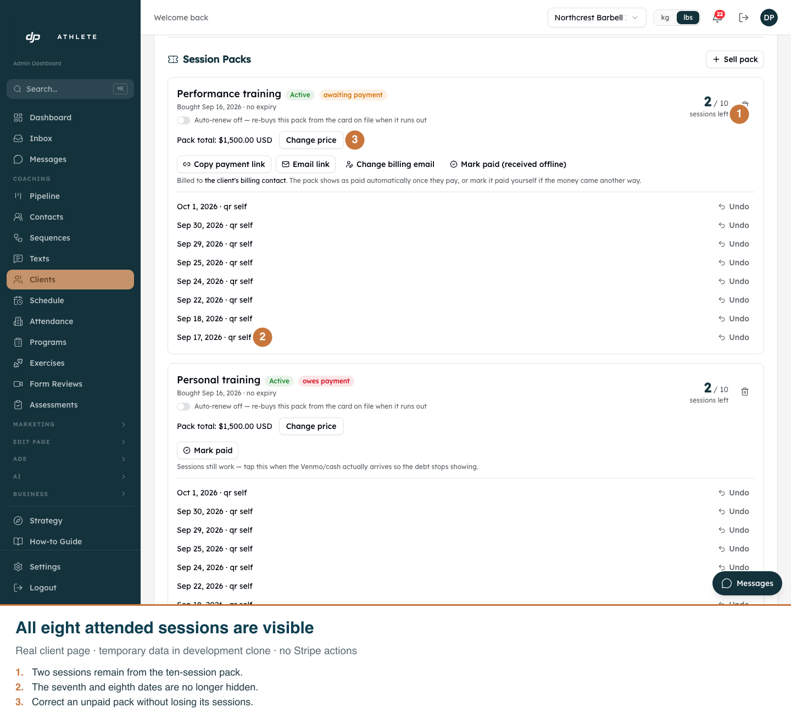
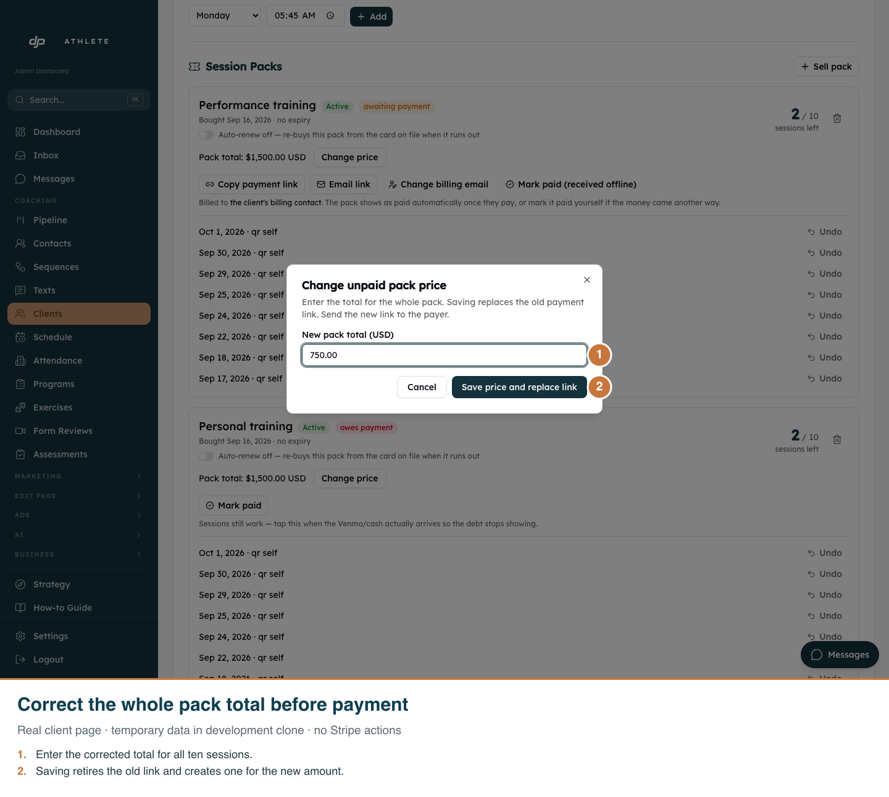
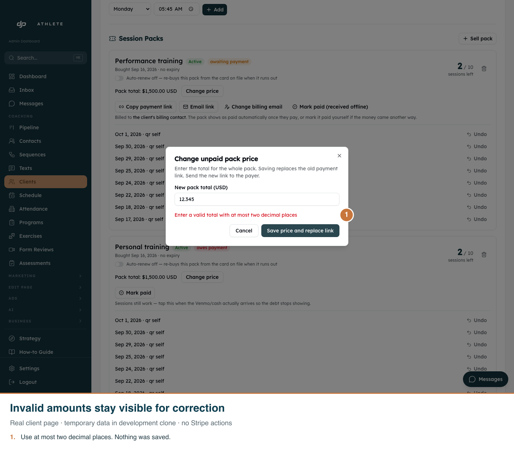
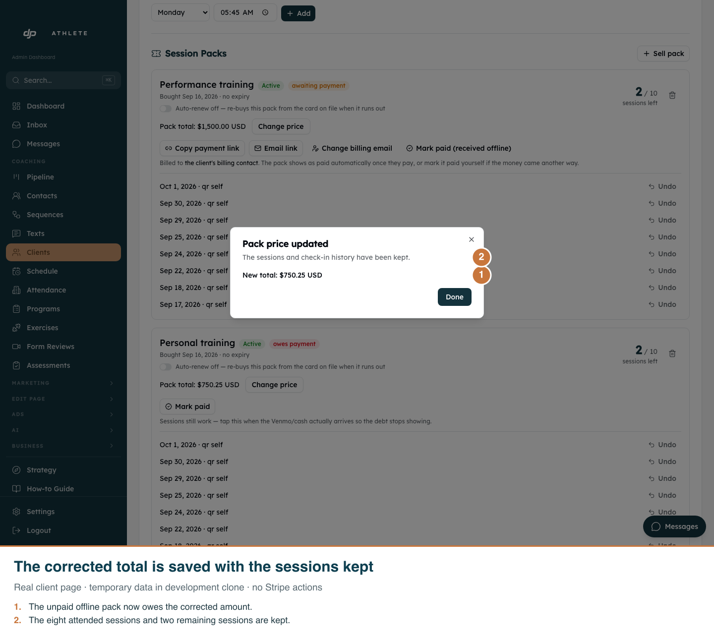

Actual /admin/clients/f7942da3-5593-40e3-88da-fc5c213d6bae page, with temporary development-clone data. All temporary packs were removed. Admin supports light presentation only. The offline save was exercised end to end; Stripe replacement safeguards were verified in automated tests, without creating real payment links.



